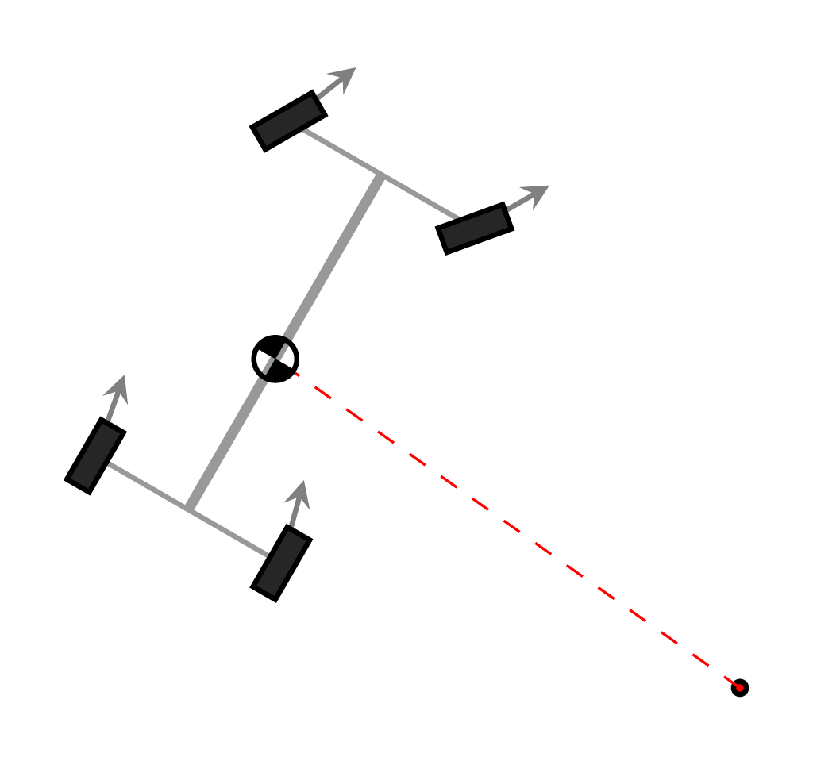

Vehicle Dynamics
Intro
As the suspension lead for the 25-26 RWR FSAE team, I was in charge of developing tire and vehicle dynamics models to guide our design process.
Tire Modeling

To create the tire model, Kavan Weeks and I wrote Python code to pre-process raw TTC (Tire Test Consortium) data and fit it to the pure lateral MF6.1 (Magic Formula) tire model from Tire and Vehicle Dynamics by Pacejka. We used this model to evaluate available tire options by comparing the combined coefficient of friction for a pair of tires—one highly loaded and another lightly loaded—at the same slip angle. Although initial results indicated that Tire A would offer the best performance, further analysis of the raw data revealed that Tire A was highly sensitive to temperature; the runs producing the highest grip had an average tread temperature approximately 5°C warmer than any other tire. We ultimately selected Tire D due to its superior low-temperature performance, exceptional grip, and low mass.
Cornering Model
To inform the suspension design, we wanted a model that would allow us to analyze how various parameters affect the vehicle's cornering performance and handling balance. My approach was to create a steady-state four-wheel cornering model that abstracted away suspension kinematics in favor of a parameterized methodology. I modeled the roll-center location and camber as functions of wheel travel, and modeled load transfer using a simplified roll-center-based approach with a compliant chassis. This model enabled the team to quickly evaluate design concepts and set suspension requirements with minimal complexity and a direct focus on performance.
Kinematics

After using the cornering model to set requirements, we needed tools to optimize the suspension to meet them. To achieve this, I wrote a Python script to solve the front-view planar kinematics of the suspension including bump steer, camber gain, and RCM (roll center migration). The code also computed bump steer by determining how much the tie-rod length must change to maintain zero steer angle throughout its travel; using a small-displacement analysis, it then approximated the resulting steer angle at the tire.

Our design process involved providing the optimization code with constraints: fixed pickup locations, along with boundaries for adjustable pickup locations. For the front suspension where we had two variables to optimize, we also assigned weights for bump steer and RCM in the cost function. The solver then automatically generated the optimum suspension geometry for our requirements and constraints.